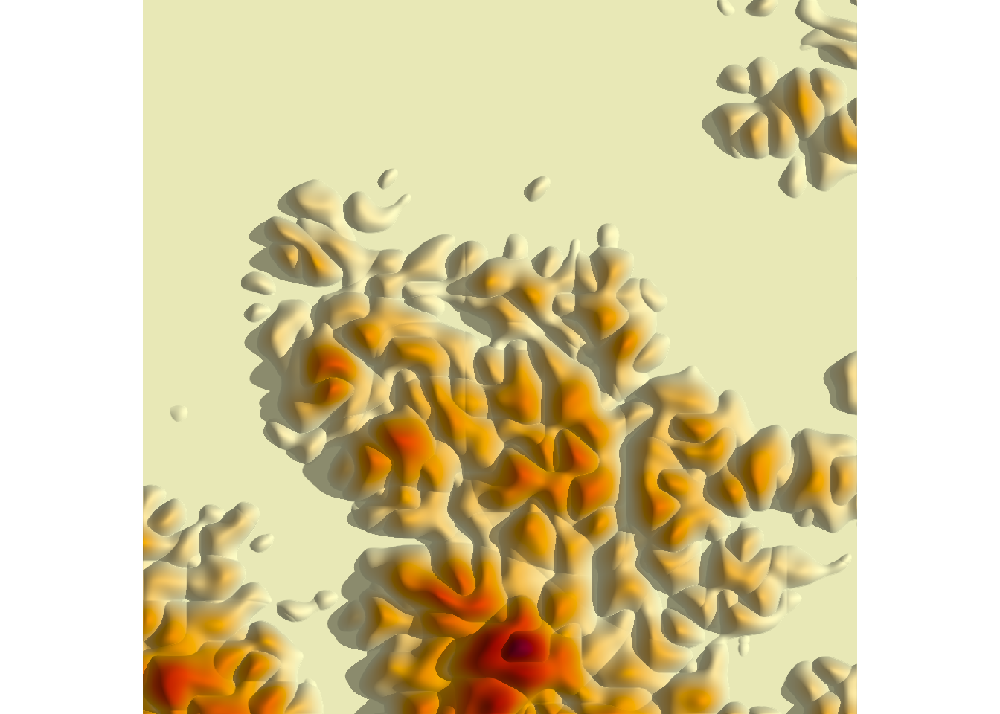
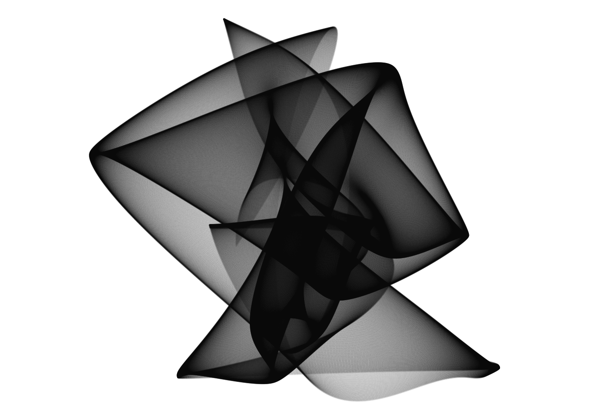
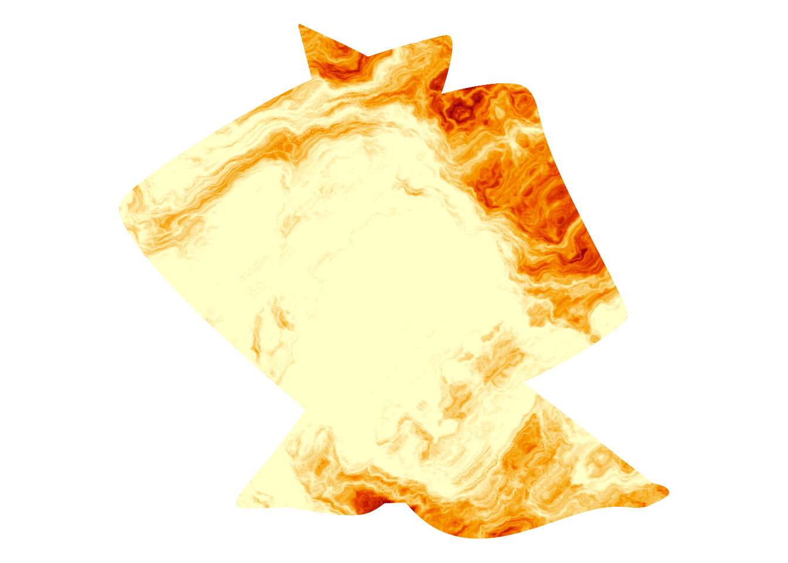

![]()
Magic doesn’t come from talent. It comes from pain.
– Eliot Waugh1
In the last few weeks I’ve been tinkering with a generative art system I ended up calling broken lands. It creates maps of bizarre and – I expect – impossible landscapes in R, using the ambient package to generate the topography, and rayshader to render shadows cast by a hypothetical light source. It creates images like these:


To my eye, at least, these images are both beautiful and tragic. I cannot help but interpret them as coastal landscapes in an alien geography of some kind, a land that has suffered some cataclysm like the Doom of Valyria or the Fall of Istar. The contours feel too contorted to be the result of any terrestrial process, and – again, by my interpretation – there’s a tension between the smoothness of the individual contours and the jagged, chaotic structure of the landscape overall.
But what would I know? I wrote the code that makes the system work, but I don’t have a monopoly of interpretation of the images. Death of the author and all that. Barthes would call me the “scriptor” rather than the author, I suppose, which honestly feels about right for generative art. So yeah. The pieces are what they are, quite separate from the artist and from the process by which the system was constructed.
That said, if you’re familiar with the R ecosystem you can probably take an educated guess about the tools I used to make these pieces. The spatial noise patterns that form the basis of these pieces are created using the ambient package. The shadows and three-dimensional look are provided by rayshader. I wrote about both of these packages in my workshop on generative art in R workshop (specifically: ambient art, rayshader art), and those tutorials are probably the place to begin if you’ve never used either of these packages for generative art before.
Starting simple
Here’s a simple system constructed from these tools. It’s built using three functions. There’s a new_grid() function used to define a grid of x and y coordinates, a generate_simplex() function used to create spatial noise patterns on such a grid, and a render() function used to create an image. First, the new_grid() function:
new_grid <- function(n = 500) {
ambient::long_grid(
x = seq(0, 1, length.out = n),
y = seq(0, 1, length.out = n)
)
}
canvas <- new_grid()
canvas# A tibble: 250,000 × 2
x y
<dbl> <dbl>
1 0 0
2 0 0.00200
3 0 0.00401
4 0 0.00601
5 0 0.00802
6 0 0.0100
7 0 0.0120
8 0 0.0140
9 0 0.0160
10 0 0.0180
# … with 249,990 more rowsThe output appears to be a tibble that contains x and y coordinates.2 This defines the spatial locations that we’ll use to create the image, but we’ll need to assign colours to each of those locations.
Painting a canvas with spatial noise
In order to do this, we’ll write a function called generate_simplex() that generates interesting patterns of spatial noise:
generate_simplex <- function(x, y) {
ambient::fracture(
noise = ambient::gen_simplex,
fractal = ambient::billow,
octaves = 10,
freq_init = .02,
frequency = ~ . * 2,
gain_init = 1,
gain = ~ . * .8,
x = x,
y = y
)
}The particular choices I’ve made here came about from trial and error. I played around with a lot of different settings when creating generative art in this style, and these were things I liked. I’m not going to dive into the details here: you can find out more by reading the tutorial on spatial noise art I linked to earlier. For the current post, all I want to highlight is that we can use this function to add a new column to the canvas that defines our artwork:
canvas <- canvas |> dplyr::mutate(paint = generate_simplex(x, y))
canvas# A tibble: 250,000 × 3
x y paint
<dbl> <dbl> <dbl>
1 0 0 -3.96
2 0 0.00200 -3.94
3 0 0.00401 -3.92
4 0 0.00601 -3.90
5 0 0.00802 -3.88
6 0 0.0100 -3.86
7 0 0.0120 -3.83
8 0 0.0140 -3.81
9 0 0.0160 -3.79
10 0 0.0180 -3.77
# … with 249,990 more rowsThis canvas object is structured like a lookup table: it’s a data frame with columns specifying x and y coordinates, and it contains a third column that specifies the colour of “paint” that needs to be applied at each coordinate. However, it’s a very structured data frame because the x and y values form a grid. This3 makes straightforward to flip from this format to a “bitmap” matrix format:4
bitmap <- canvas |> as.array(value = paint)
bitmap[1:10, 1:10] x
y [,1] [,2] [,3] [,4] [,5] [,6]
[1,] -3.963129 -3.907761 -3.852965 -3.799301 -3.747303 -3.697469
[2,] -3.941471 -3.886902 -3.832208 -3.778647 -3.726753 -3.677024
[3,] -3.919827 -3.865546 -3.811842 -3.758567 -3.706953 -3.657492
[4,] -3.898212 -3.844404 -3.791172 -3.739063 -3.687900 -3.638870
[5,] -3.876638 -3.823485 -3.770902 -3.719430 -3.669584 -3.621135
[6,] -3.855120 -3.802792 -3.751028 -3.700357 -3.651277 -3.604226
[7,] -3.833672 -3.782329 -3.731542 -3.681821 -3.633626 -3.587355
[8,] -3.812270 -3.762111 -3.712432 -3.663776 -3.616554 -3.571126
[9,] -3.790755 -3.742256 -3.693736 -3.646188 -3.599984 -3.555442
[10,] -3.768855 -3.723001 -3.675612 -3.629137 -3.583917 -3.540247
x
y [,7] [,8] [,9] [,10]
[1,] -3.650248 -3.606061 -3.565361 -3.528607
[2,] -3.629906 -3.585801 -3.545119 -3.508276
[3,] -3.610630 -3.566754 -3.526212 -3.489361
[4,] -3.592409 -3.548873 -3.508556 -3.471750
[5,] -3.575186 -3.532063 -3.492022 -3.455298
[6,] -3.558867 -3.516203 -3.476468 -3.439852
[7,] -3.543344 -3.501171 -3.461756 -3.425267
[8,] -3.527804 -3.486847 -3.447764 -3.411414
[9,] -3.512843 -3.472426 -3.434391 -3.398189
[10,] -3.498379 -3.458524 -3.420856 -3.385514A grid of numbers isn’t very pretty to look at, but we will need to create this matrix representation before passing the data to rayshader later. But I’m getting ahead of myself. For now, we can use the image() function to render an image from matrix-formatted data:
canvas |>
as.array(value = paint) |>
image(axes = FALSE, asp = 1, useRaster = TRUE)
Much nicer.
Casting shadows across the landscape
render <- function(mat, shades = NULL) {
if(is.null(shades)) {
shades <- hcl.colors(12, "YlOrRd", rev = TRUE)
}
rayshader::height_shade(
heightmap = mat,
texture = shades
) |>
rayshader::add_shadow(
shadowmap = rayshader::ray_shade(
heightmap = mat,
sunaltitude = 50,
sunangle = 80,
multicore = TRUE,
zscale = .005
),
max_darken = .2
) |>
rayshader::plot_map()
}canvas |>
as.array(value = paint) |>
render()Making islands with a crude cut
I cut my bangs with some rusty kitchen scissors
I screamed his name ’til the neighbors called the cops
I numbed the pain at the expense of my liver
Don’t know what I did next, all I know I couldn’t stop
– Miranda Lambert
canvas |>
dplyr::mutate(islands = dplyr::if_else(
condition = paint < median(paint),
true = median(paint),
false = paint
)) |>
as.array(value = islands) |>
render()
The complete source code for generating this image is included in the islands.R script accompanying this post.
Contorting the geography
generate_curl <- function(x, y) {
ambient::curl_noise(
generator = ambient::fracture,
noise = ambient::gen_simplex,
fractal = ambient::fbm,
octaves = 3,
frequency = ~ . * 2,
freq_init = .3,
gain_init = 1,
gain = ~ . * .5,
x = x,
y = y
)
}The first trick is to define a two dimensional manifold that maps to the original “base” space in a rather nonlinear way. Curl transformations work rather nicely for this:
set.seed(8)
grid <- new_grid()
coords <- generate_curl(grid$x, grid$y)In the final image we’ll do this in a finer grain: a 500x500 grid is a little coarse for what we have in mind. But the coarse-grained version is a little easier to visualise:
ggplot2::ggplot(coords, ggplot2::aes(x, y)) +
ggplot2::geom_point(size = .1, alpha = .1) +
ggplot2::coord_equal() +
ggplot2::theme_void()
Our noise operations will be specified on the transformed manifold, but the final image will be defined on the base space. Here’s what I mean:
grid <- grid |>
dplyr::mutate(
curl_x = coords$x,
curl_y = coords$y
)
ggplot2::ggplot(grid, ggplot2::aes(x, y, colour = curl_x)) +
ggplot2::geom_point(size = .1) +
ggplot2::coord_equal() +
ggplot2::theme_void()
Next, this…
generate_worley <- function(x, y) {
ambient::fracture(
noise = ambient::gen_worley,
fractal = ambient::billow,
octaves = 8,
freq_init = .1,
frequency = ~ . * 2,
gain_init = 3,
gain = ~ . * .5,
value = "distance2",
x = x,
y = y
)
}grid <- grid |>
dplyr::mutate(
dist = generate_worley(curl_x, curl_y)
)
ggplot2::ggplot(grid, ggplot2::aes(curl_x, curl_y, colour = dist)) +
ggplot2::geom_point(size = .1) +
ggplot2::coord_equal() +
ggplot2::theme_void()
Here it is plotted in the original space:
ggplot2::ggplot(grid, ggplot2::aes(x, y, colour = dist)) +
ggplot2::geom_point(size = .1) +
ggplot2::coord_equal() +
ggplot2::theme_void()Third transformation:
grid <- grid |>
dplyr::mutate(
paint = generate_simplex(x + dist, y + dist)
)
ggplot2::ggplot(grid, ggplot2::aes(curl_x, curl_y, colour = paint)) +
ggplot2::geom_point(size = .1) +
ggplot2::coord_equal() +
ggplot2::theme_void()
ggplot2::ggplot(grid, ggplot2::aes(x, y, colour = paint)) +
ggplot2::geom_point(size = .1) +
ggplot2::coord_equal() +
ggplot2::theme_void()
Discretise:
discretise <- function(x, n) {
round(ambient::normalise(x) * n) / n
}set.seed(8)
grid <- new_grid()
coords <- generate_curl(grid$x, grid$y)
grid <- grid |> dplyr::mutate(
curl_x = coords$x |> discretise(20),
curl_y = coords$y |> discretise(20),
dist = generate_worley(curl_x, curl_y),
paint = generate_simplex(x + dist, y + dist) |> discretise(20)
)
ggplot2::ggplot(grid, ggplot2::aes(x, y, colour = paint)) +
ggplot2::geom_point(size = .1) +
ggplot2::coord_equal() +
ggplot2::theme_void()
grid <- grid |>
dplyr::mutate(
height = dplyr::if_else(paint < .5, .5, paint)
)
ggplot2::ggplot(grid, ggplot2::aes(x, y, colour = height)) +
ggplot2::geom_point(size = .1) +
ggplot2::coord_equal() +
ggplot2::theme_void()
Colour scale:
ggplot2::ggplot(grid, ggplot2::aes(x, y, colour = height)) +
ggplot2::geom_point(size = .1) +
ggplot2::coord_equal() +
ggplot2::theme_void() +
ggplot2::scale_color_viridis_c()
Convert to raster-friendly array:
mat <- as.array(grid, value = height)Rayshade it:
render(mat)
Footnotes
Also Lev Grossman I guess, but honestly Hale Appleman’s delivery is so good that I cannot possibly attribute the quote to anyone except Eliot.↩︎
It’s actually a slightly different kind of object called a “long grid” but for now I’ll treat it like a tibble↩︎
Or, more precisely, the fact that we created this object by calling
ambient::long_grid()rather thantidyr::expand_grid()or theexpand.grid()function in base R.↩︎I’d ordinarily refer to this as a raster format but it’s not strictly a raster object in the R sense.↩︎
Reuse
Citation
@online{navarro2023,
author = {Danielle Navarro},
title = {Shattered Landscapes},
date = {2023-02-27},
url = {https://blog.djnavarro.net/posts/2023-02-27_shattered-landscapes},
langid = {en}
}